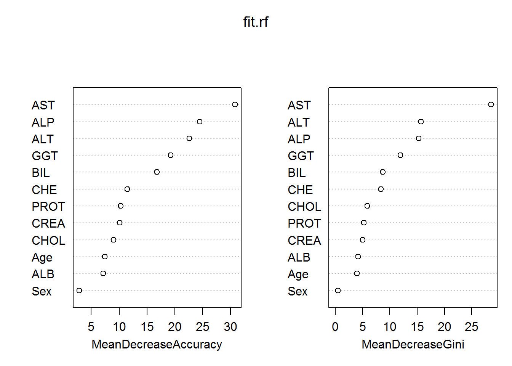

5 FITTING RANDOM FOREST
data<-read.csv("data/CleanedData.csv",header = T,colClasses=c("NULL", rep(NA, 13)))
set.seed(120)
V <- 5
n <- NROW(data); n0 <- sum(data$Category==0); n1 <- n-n0;
missclass.rate = c()
err_vec1= c()
for (v in 1:V) {
err_vec1=c(err_vec1, v)
missclass.rate=c(missclass.rate, v)
}
id.fold <- 1:n
id.fold[data$Category==0] <- sample(x=1:V, size=n0, replace=TRUE)
id.fold[data$Category==1] <- sample(x=1:V, size=n1, replace=TRUE)
for (v in 1:V) {
train.v <- data[id.fold!=v, ]; test.v <- data[id.fold==v, ];
mtry = tuneRF(train.v[ , -1], factor(train.v$Category), ntreeTry=200,
stepFactor=2, improve=0.05, trace=TRUE,
plot=FALSE, dobest=FALSE, printFlag = FALSE)
best.mtry = mtry[mtry[, 2] == min(mtry[, 2]), 1]
## Fitting model for Random Forest.
fit.rf = randomForest(factor(Category) ~., mtry=best.mtry,
data=train.v, importance=TRUE, proximity=TRUE,
ntree=500)
yobs = test.v$Category
pred.rf = predict(fit.rf, newdata=test.v[, -1], type="prob")[, 2]
mod = auc(yobs, pred.rf)
err_vec1[v] = mod
print(paste("AUC for fold", v, ":", err_vec1[v]))
pred.rate = ifelse(pred.rf > 0.5, 1, 0)
miss.rate <- mean(yobs != pred.rate)
missclass.rate[v] = miss.rate
print(paste("Missclassification rate for fold", v,
":",missclass.rate[v]))
}## mtry = 3 OOB error = 2.46%
## Searching left ...
## mtry = 2 OOB error = 2.46%
## 0 0.05
## Searching right ...
## mtry = 6 OOB error = 2.05%
## 0.1666667 0.05
## mtry = 12 OOB error = 3.07%
## -0.5 0.05## Setting levels: control = 0, case = 1## Setting direction: controls < cases## [1] "AUC for fold 1 : 0.945535714285714"
## [1] "Missclassification rate for fold 1 : 0.0708661417322835"
## mtry = 3 OOB error = 2.46%
## Searching left ...
## mtry = 2 OOB error = 2.05%
## 0.1666667 0.05
## mtry = 1 OOB error = 3.49%
## -0.7 0.05
## Searching right ...
## mtry = 6 OOB error = 2.46%
## -0.2 0.05## Setting levels: control = 0, case = 1
## Setting direction: controls < cases## [1] "AUC for fold 2 : 0.993980582524272"
## [1] "Missclassification rate for fold 2 : 0.046875"
## mtry = 3 OOB error = 3.05%
## Searching left ...
## mtry = 2 OOB error = 2.85%
## 0.06666667 0.05
## mtry = 1 OOB error = 4.28%
## -0.5 0.05
## Searching right ...
## mtry = 6 OOB error = 3.05%
## -0.07142857 0.05## Setting levels: control = 0, case = 1
## Setting direction: controls < cases## [1] "AUC for fold 3 : 0.999033816425121"
## [1] "Missclassification rate for fold 3 : 0.00806451612903226"
## mtry = 3 OOB error = 3.11%
## Searching left ...
## mtry = 2 OOB error = 3.73%
## -0.2 0.05
## Searching right ...
## mtry = 6 OOB error = 3.94%
## -0.2666667 0.05## Setting levels: control = 0, case = 1
## Setting direction: controls < cases## [1] "AUC for fold 4 : 1"
## [1] "Missclassification rate for fold 4 : 0"
## mtry = 3 OOB error = 3.12%
## Searching left ...
## mtry = 2 OOB error = 2.73%
## 0.125 0.05
## mtry = 1 OOB error = 4.1%
## -0.5 0.05
## Searching right ...
## mtry = 6 OOB error = 3.71%
## -0.3571429 0.05## Setting levels: control = 0, case = 1
## Setting direction: controls < cases## [1] "AUC for fold 5 : 0.998924731182796"
## [1] "Missclassification rate for fold 5 : 0.00970873786407767"varImpPlot(fit.rf) ##Variance Importance Plot
importance(fit.rf) ## 0 1 MeanDecreaseAccuracy MeanDecreaseGini
## Age 8.040746 1.911989 7.407360 3.9726533
## Sex 2.615616 1.347251 2.853548 0.4915929
## ALB 6.412576 3.703261 7.157225 4.1808699
## ALP 20.549509 21.329873 24.419384 15.3071124
## ALT 21.679658 15.655653 22.622220 15.6858380
## AST 22.524230 31.338243 30.769015 28.5160763
## BIL 8.339446 15.841815 16.775333 8.7020686
## CHE 10.741334 5.709985 11.470642 8.4026776
## CHOL 7.256905 5.620373 8.995091 5.8567032
## CREA 8.207112 8.263927 10.096894 5.0378375
## GGT 12.111353 16.399709 19.254100 11.9141430
## PROT 9.846939 3.133041 10.324115 5.2175627comment
The importance ranking shows that.AST,ALP,ALT are the important variables by random forest respectively.
Average.Auc.rf<-print(paste("Average of AUC is ", mean(err_vec1)))## [1] "Average of AUC is 0.98749496888358"Average.mis.rf<-print(paste("Average of Miss is ", mean(missclass.rate)))## [1] "Average of Miss is 0.0271028791450787"AUC.RF<-mean(err_vec1)
miss.rate.RF<-mean(missclass.rate)comment
The average AUC of the v folds is 0.98 which shows a good classification by the random forest leading to a low misclassification is 0.02.